Copyright © 2026 United Security Providers AG
Dieses Dokument ist durch das Urheberrecht gemäß den geltenden Gesetzen und internationalen Verträgen geschützt. Kein Teil dieses Dokuments darf in irgendeiner Form vervielfältigt und ohne vorherige schriftliche Genehmigung der United Security Providers AG an Dritte weitergegeben werden.
DIE DOKUMENTATION WIRD „WIE BESEHEN“ BEREITGESTELLT, UND ALLE AUSDRÜCKLICHEN ODER STILLSCHWEIGENDEN ZUSICHERUNGEN UND GEWÄHRLEISTUNGEN, EINSCHLIESSLICH, ABER NICHT BESCHRÄNKT AUF JEGLICHE STILLSCHWEIGENDE GEWÄHRLEISTUNG DER MARKTGÄNGIGKEIT, DER EIGNUNG FÜR EINEN BESTIMMTEN ZWECK ODER DER NICHTVERLETZUNG VON RECHTEN DRITTER, WERDEN IM RAHMEN DES NACH DEN GELTENDEN GESETZEN ZULÄSSIGEN UMFANGS AUSGESCHLOSSEN.
Inhaltsverzeichnis
Tabellenverzeichnis
Das USP Network Authentication System® (USP NAS) ist eine Network-Access-Control-Lösung (NAC), die Transparenz über Ihr Netzwerk sowie einen sicheren Zugriff darauf bietet. Dazu kommuniziert es mit Netzwerkgeräten (Switches, Access Points, Router), erfasst die angeschlossenen Endpunkte (Laptops, Desktops, Drucker, IoT-Geräte und mehr) und setzt Zugriffsrichtlinien basierend auf Endpunkttyp, Benutzeridentität und weiteren Faktoren durch.
Diese Installationsanleitung beschreibt die Installation des USP Network Authentication System® (USP NAS) in einer virtualisierten Umgebung.
Bitte beachten Sie, dass diese Anleitung auf USP NAS Release 15.x basiert.
Die USP NAS Appliance wurde auf den Hypervisoren VMware ESXi, Microsoft Hyper-V und Oracle VirtualBox getestet. Sie läuft erfahrungsgemäss auch zuverlässig in Nutanix, Proxmox, KVM/QEMU und ähnlichen Virtualisierungsumgebungen. Zusätzlich wird der Betrieb auf Bare-Metal-Servern der Dell PowerEdge 6xx-Serie unterstützt.
Um das USP NAS System zu installieren, müssen Sie zunächst Ihre Hardware-Appliance oder Ihre virtuelle Maschine so konfigurieren, dass sie von der USP NAS .iso-Datei startet. Wählen Sie nach dem Start von der .iso-Datei im Bootloader-Menü die Option "Install appliance operating system". Die Installation läuft anschliessend ohne weitere Benutzerinteraktion ab. Partitionen und Dateisysteme werden erstellt und das USP NAS System wird installiert. Danach startet das System automatisch neu und bootet das USP NAS Betriebssystem.
Die Netzwerkschnittstelle der Appliance und das Standard-Gateway können über das Konsolenmenü festgelegt werden.
Nach Abschluss der initialen Netzwerkeinrichtung können Sie mit einem Webbrowser Ihrer Wahl (empfohlen werden Google Chrome, Mozilla Firefox oder Microsoft Edge) über die URL der konfigurierten IP-Adresse https://X.X.X.X auf die webbasierte USP NAS GUI zugreifen, um mit der Konfiguration der USP NAS Applikation fortzufahren.
Erstellen Sie eine virtuelle Maschine mit folgenden Grundeinstellungen:
192.168.56.1/255.255.255.0)
Hier eine Best-Practice-Übersicht der Hardwareanforderungen für USP NAS in Abhängigkeit von der Anzahl Endpunkte.
Tabelle 2.1. USP NAS Hardware-Systemanforderungen
| 1 - 5000 Endpunkte | 5000 - 100000 Endpunkte | |
|---|---|---|
Festplattengrösse | 50 GB | 140 GB |
RAM | 8 GB | 16 GB |
Prozessorkerne | 2-4 | 8 |
Für eine schnelle und einfache Implementierung von USP NAS empfehlen wir eine VM-Variante mit einer einzigen Netzwerkkarte. Diese sollte als Bridge zu Ihrem bestehenden Netzwerk konfiguriert werden, damit Netzwerkgeräte wie Switches mit USP NAS kommunizieren können.
Öffnen Sie die Netzwerkeinstellungen des gewünschten Hypervisors und erstellen Sie eine neue virtuelle Netzwerkkarte oder verwenden Sie eine bestehende.
USP NAS kann einen oder mehrere Netzwerkadapter verwenden, z. B. um Management- und Datenverkehr zu trennen. In unserem Beispiel verwenden wir nur eine einzige Netzwerkkarte.
Ist beim ersten Start nur eine Netzwerkkarte vorhanden, versucht USP NAS, eine IP-Adresse per DHCP zu beziehen; dies kann später im Konsolenmenü geändert werden (siehe unten). Sind mehrere Schnittstellen vorhanden, müssen diese manuell im Konsolenmenü konfiguriert werden.
Im folgenden Beispiel verwenden wir das Netzwerk 192.168.56.1/24 und weisen USP NAS die IP-Adresse 192.168.56.10 zu.
Die folgenden Ports und Protokolle werden für die Kommunikation mit USP NAS verwendet. Wir unterscheiden zwischen obligatorischen und optionalen Ports. Stellen Sie sicher, dass Ihre Unternehmensfirewall die Kommunikation über diese Ports zulässt und dass die Routen zu den benötigten Subnetzen korrekt eingerichtet sind.
| Protokoll | Port | Richtung | Bemerkungen |
|---|---|---|---|
SSH |
| Eingehend | Admin-CLI-Zugriff, HA-Synchronisation zwischen zwei USP NAS Instanzen |
SNMP |
| Bidirektional | Kommunikation zwischen Netzwerkgeräten und USP NAS |
SNMP Traps |
| Bidirektional | Kommunikation zwischen Netzwerkgeräten und USP NAS |
HTTPS |
| Eingehend | Zugriff auf die Admin-WebGUI |
RADIUS Authentication |
| Bidirektional | Kommunikation zwischen Netzwerkgeräten und USP NAS, HA-Statusprüfung zwischen zwei USP NAS Instanzen |
RADIUS Accounting |
| Bidirektional | Kommunikation zwischen Netzwerkgeräten und USP NAS |
| Protokoll | Port | Richtung | Bemerkungen |
|---|---|---|---|
SMTP |
| Ausgehend | E-Mail (Alarme, geplante Berichte) |
DNS |
| Ausgehend | Namensauflösung |
NTP |
| Ausgehend | Zeitsynchronisation |
SNMP |
| Eingehend | Statusüberwachung durch externe Monitoring-Systeme |
SNMP Traps |
| Ausgehend | Monitoring/Alarmierung (z. B. Nagios, Icinga) |
HTTPS |
| Ausgehend | Aktualisierung der Herstellercodes ( |
Syslog |
| Ausgehend | Log-Weiterleitung (z. B. Syslog, Splunk, Elastic, OpenSearch) |
RADIUS Authentication |
| Ausgehend | Kommunikation mit externem RADIUS-Server (z. B. NPS) |
RADIUS Accounting |
| Ausgehend | Kommunikation mit externem RADIUS-Server (z. B. NPS) |
LDAPS |
| Ausgehend | Kommunikation mit externem LDAP-Server (z. B. Active Directory) für Web-GUI-/SSH-Login |
Laden Sie das gewünschte USP NAS ISO-Image von der USP Service Platform herunter (sofern Sie über ein Kundenkonto bei der United Security Providers AG verfügen) oder über einen spezifischen Download-Link Ihres USP NAS Partners/Distributors.
Wählen Sie das Image in den VM-Einstellungen als Medium für das optische Laufwerk aus. Sobald die virtuelle Maschine vorbereitet und die USP NAS ISO-Datei als Boot-Laufwerk ausgewählt ist, können Sie die virtuelle Maschine starten.
Auf der Konsole sollte folgende Installationsaufforderung erscheinen:
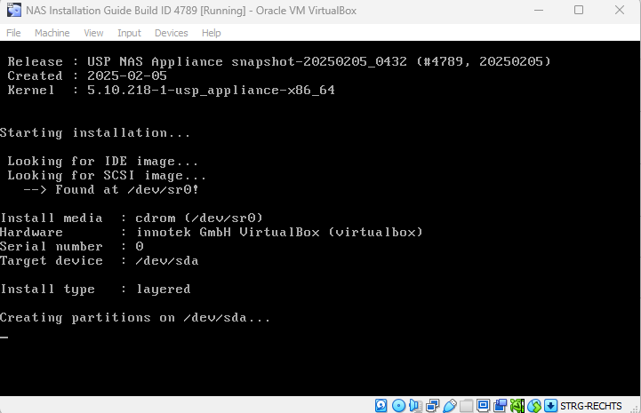
USP NAS installiert sich automatisch und startet anschliessend neu. Nach Abschluss der Installation wird auf der Konsole folgende Login-Aufforderung angezeigt:
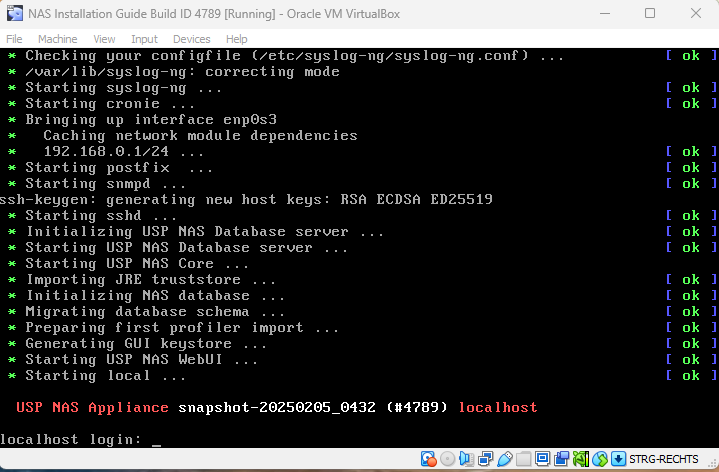
Melden Sie sich mit dem Benutzer "console" und dem Passwort "console" an, um das Hauptmenü der USP NAS Konsole aufzurufen. Das Konsolenmenü bietet verschiedene Optionen zur Konfiguration grundlegender Systemeinstellungen von USP NAS.
Hier können Sie die Netzwerkschnittstelle der USP NAS Appliance konfigurieren.
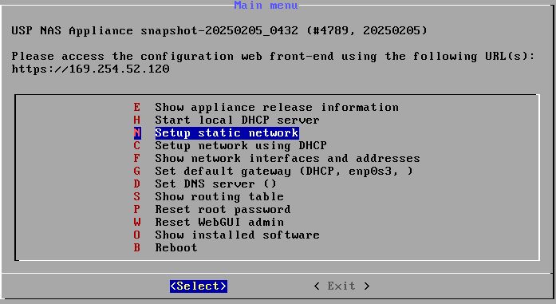
192.168.56.10
255.255.255.0
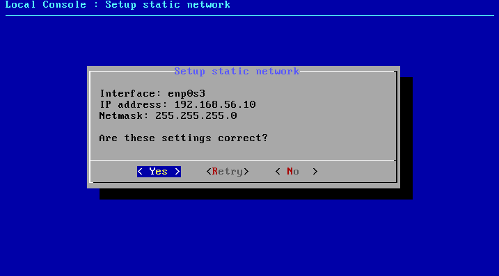
Eventuell möchten Sie auch ein Standard-Gateway definieren, damit Pakete korrekt geroutet werden.
192.168.56.1
Hinweis: Im Web-Interface haben Sie die möglichkeit, zusätzlich eine Adressierung via IPv6 zu konfigurieren.
Verlassen Sie das Konsolenmenü.
USP NAS ist nun von Ihrem Client aus per Browser unter https://192.168.56.10/ erreichbar.
Der Einrichtungsassistent ist Teil der modernen Web-GUI und erscheint, wenn Sie sich nach einer Neuinstallation von USP NAS zum ersten Mal anmelden. Klicken Sie auf Starten, um fortzufahren.
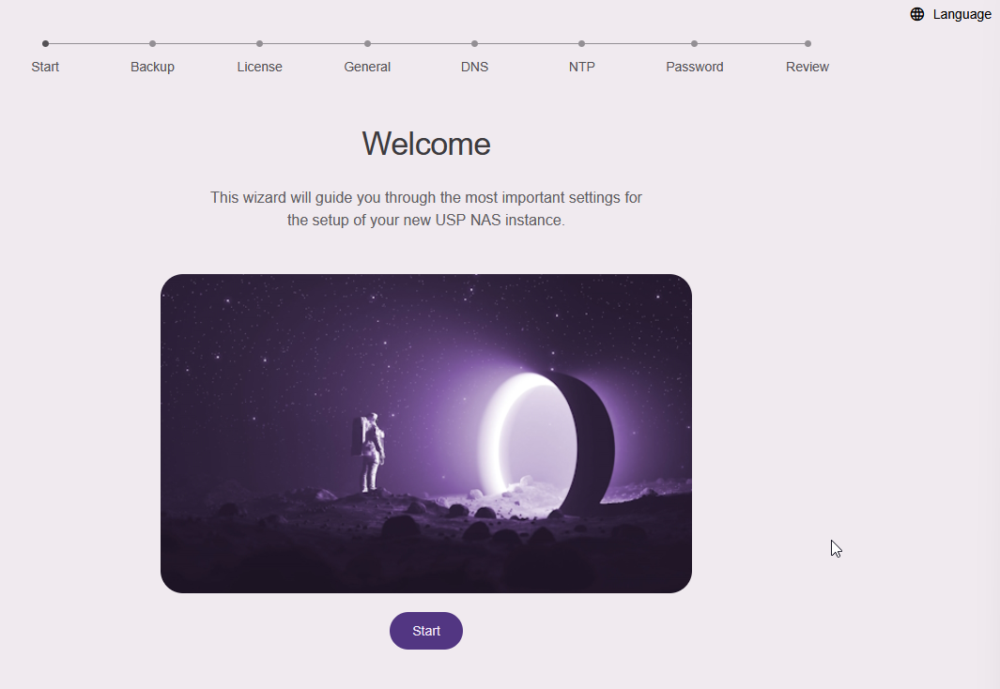
Falls Sie eine Backup-Datei einer früheren USP NAS Installation haben, können Sie diese über "Datei auswählen" wiederherstellen. Andernfalls klicken Sie bei einer neuen USP NAS Installation auf "Überspringen".
Importieren Sie über "Datei auswählen" eine gültige USP NAS Lizenzdatei, um mit der Einrichtung fortzufahren.
Im nächsten Abschnitt "Allgemeine Informationen" können Sie zusätzliche Informationen hinterlegen und den Hostnamen Ihres USP NAS Geräts festlegen, zum Beispiel:
Im nächsten Abschnitt können Sie die IP-Adressen Ihrer DNS-Server hinzufügen. Sie können diese auch später auf der Netzwerkkonfigurationsseite der Web-GUI hinzufügen.
Im nächsten Abschnitt können Sie die IP-Adressen oder Hostnamen Ihrer NTP-Server für die Zeitsynchronisation hinzufügen. Sie können diese auch später auf der Netzwerkkonfigurationsseite der Web-GUI hinzufügen.
Im vorletzten Abschnitt müssen Sie das Passwort des Standardbenutzers nasadmin ändern. Geben Sie das neue Passwort zur Bestätigung zweimal ein und klicken Sie auf Passwort ändern.
Abschliessend können Sie im Abschnitt "Konfiguration überprüfen" alle eingegebenen Einstellungen kontrollieren und mit "Änderungen übernehmen" bestätigen:
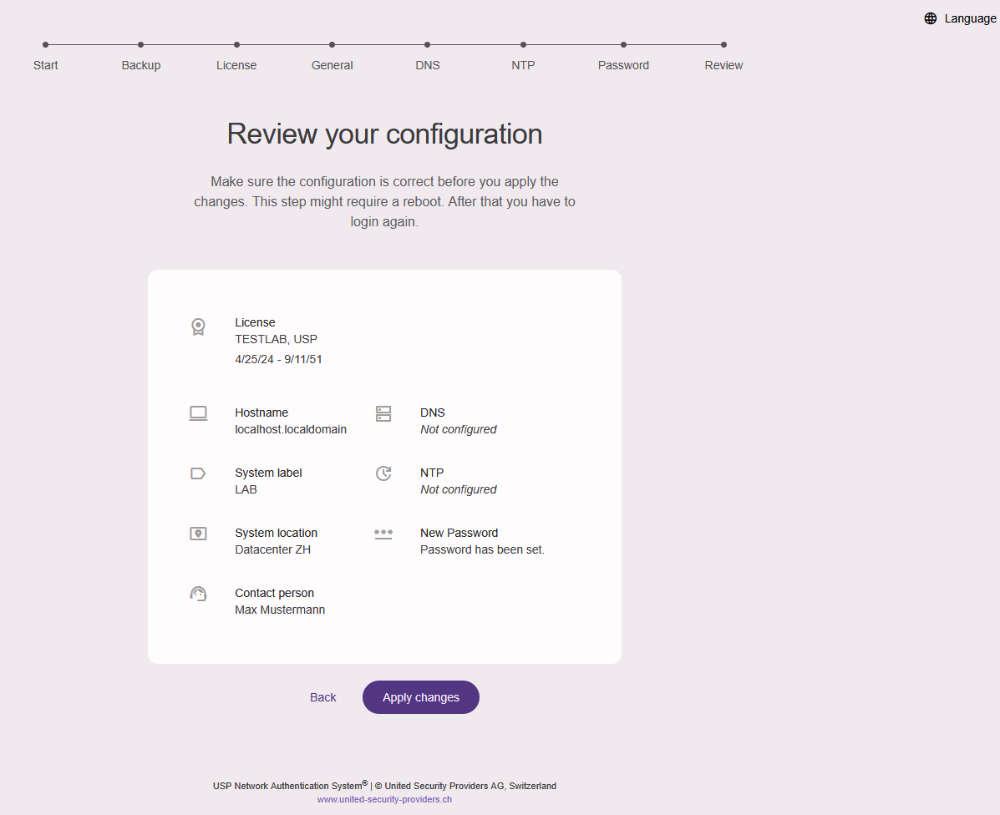
Der USP NAS Webserver wird nun neu gestartet; dies kann bis zu einer Minute dauern.
Anschliessend erscheint die Anmeldemaske. Melden Sie sich mit dem Benutzernamen "nasadmin" und Ihrem neu festgelegten Passwort an.
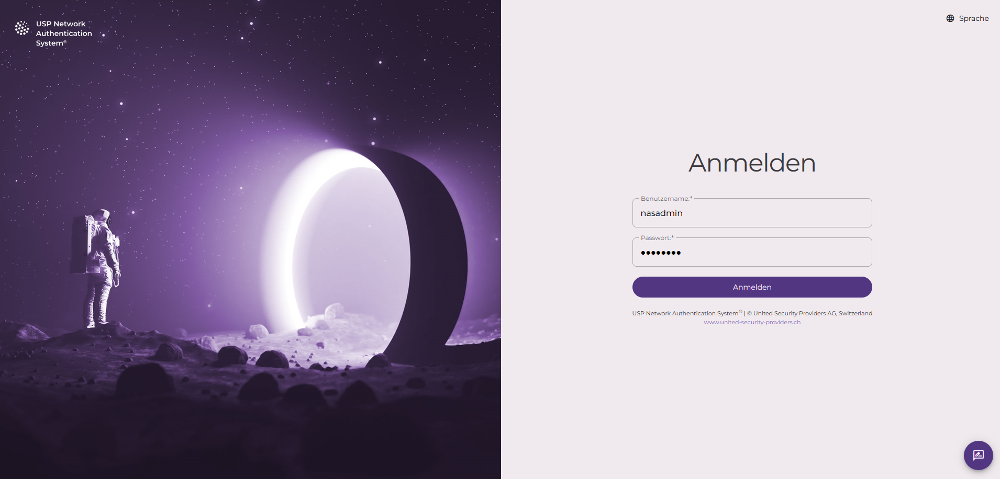
Navigieren Sie zu „Konfiguration“ → „System“ und überprüfen Sie die Systemkonfiguration.
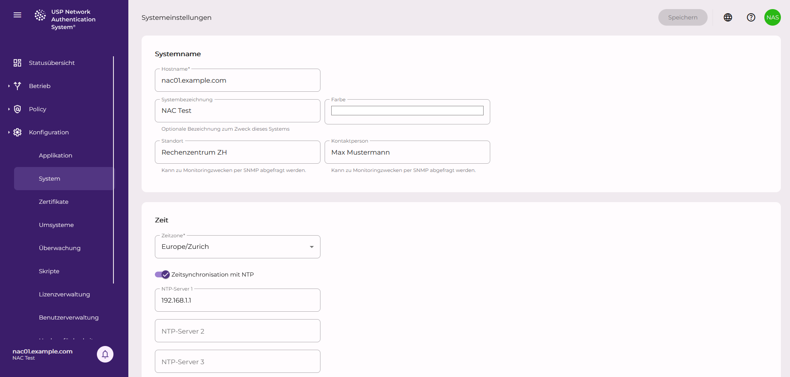
Hier haben Sie ausserdem die Möglichkeit, die Zeitzone, IPv6, zusätzliche statische Netzwerkrouten und vieles mehr zu konfigurieren.
Sie können nun Netzwerkgeräte wie Switches registrieren und Endpunkte wie Laptops und Drucker in USP NAS inventarisieren.
Vergessen Sie nicht, einen Snapshot der VM zu erstellen und ihn passend zu benennen, z. B. "Clean Setup", damit Sie für eine Neuinstallation einfach zu diesem Zustand zurückkehren können.
USP NAS kommuniziert mit Netzwerkgeräten wie Switches über SNMP und RADIUS.
USP NAS kann entweder SNMP, RADIUS oder beide Protokolle zur Kommunikation mit einem Switch verwenden.
Im Folgenden wird kurz beschrieben, wie Sie einen neuen Switch in USP NAS hinzufügen.
Navigieren Sie im Hauptmenü auf der linken Seite zu "Betrieb" → "Netzwerkgeräte" und klicken Sie oben auf das Pluszeichen +.
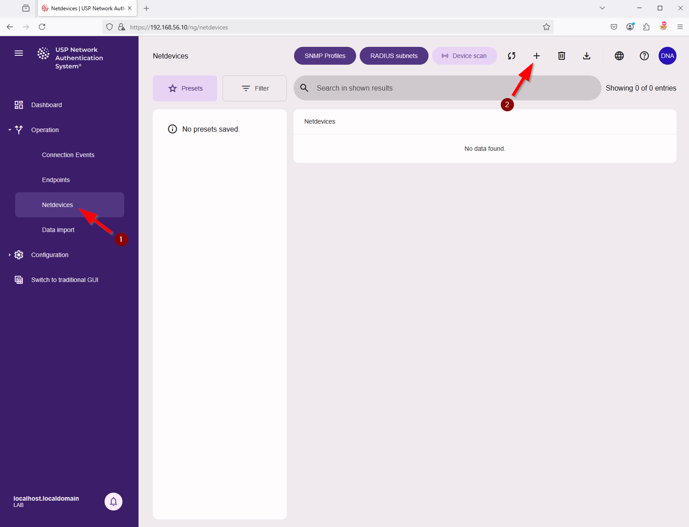
Geben Sie im nächsten Fenster "Netzwerkgerät registrieren" alle erforderlichen Informationen für den neuen Switch ein, zum Beispiel:
Ein Standard-SNMP-Profil mit Version 2c und den Community-Strings public/private ist vorkonfiguriert.
Weitere Profile können über die Schaltfläche SNMP-Profile hinzugefügt werden.
Stellen Sie sicher, dass SNMP auf dem Switch aktiviert ist und die entsprechenden Community-Strings (eine Art Shared Secret, allerdings unverschlüsselt) bzw. Benutzernamen und Passwörter (bei SNMPv3) konfiguriert sind.
Hinweis: Sie können auch IPv6-Adressen verwenden, um mit Netzwerkgeräten zu kommunizieren.
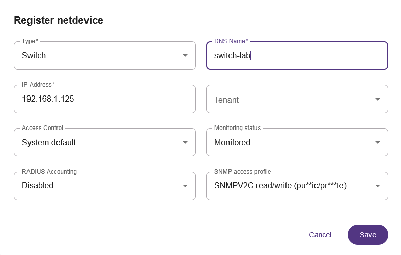
USP NAS beginnt nun in Kürze mit dem Scan des neuen Netzwerkgeräts.
Es sollte die Information "Unbekannt / Warte auf Scan" angezeigt werden. Warten Sie, bis der Status in Gelb auf "Keine Netports definiert" wechselt.
Die Warnung Fehlende Netports bedeutet, dass nun die Netports dieses Switches konfiguriert werden müssen, also dessen Uplink-/Downlink-Ports, damit USP NAS weiss, welche Ports bei der Zugriffskontrolle ignoriert werden müssen.
Klicken Sie für dieses Netzwerkgerät auf die Info-Schaltfläche (Details Netzwerkgerät). Klicken Sie dann oben auf den Tab Ports, um die Liste der Schnittstellen anzuzeigen. Über das Aktionsmenü am Ende jeder Zeile können Sie den jeweiligen Port als Netport definieren.
Hinweis: Wenn auf Ihren Switches LLDP (Link Layer Discovery Protocol) aktiviert ist, kann USP NAS die Netports anhand der LLDP-Nachbarinformationen automatisch erkennen. Dieses Verhalten lässt sich unter „Konfiguration“ → „Anwendung“ → „SNMP“ konfigurieren.
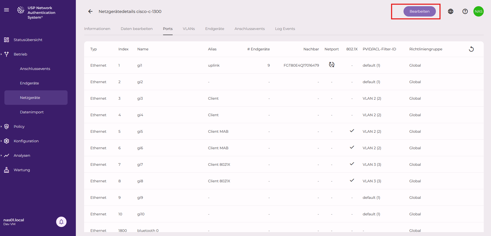
USP NAS scannt den Switch erneut, und die Statusanzeige in der Übersicht wechselt auf Grün.
Bei einem Kommunikationsfehler sollten Sie die SNMP-Einstellungen des Switches und das SNMP-Zugriffsprofil in USP NAS überprüfen, ebenso allfällige Firewall-Regeln, die SNMP-Verkehr blockieren könnten (Port 161 und 162).
Um SNMP-Traps vom Switch zu empfangen, müssen Sie den Switch so konfigurieren, dass er Traps an die IP-Adresse der USP NAS Appliance sendet.
Ausserdem muss die SNMP-Trap-Community definiert werden. USP NAS unterstützt derzeit nur SNMPv1/SNMPv2c-Traps.
Die SNMP-Trap-Community ist eine globale Einstellung, die auf der Seite der Applikationskonfiguration festgelegt werden kann (navigieren Sie zu Konfiguration → Applikation → SNMP).
Der Standardwert ist trapcom.
Eine Änderung dieses Werts erfordert einen Neustart des USP NAS Core-Dienstes.
Dies wird durch das Benachrichtigungssymbol in der linken unteren Ecke angezeigt.
Wenn Ihre Switches 802.1X-Authentifizierung unterstützen, können Sie optional die RADIUS-Authentifizierung auf dem Switch konfigurieren, um die am Switch angeschlossenen Endpunkte zu identifizieren und zu authentifizieren. Dieser Vorgang unterscheidet sich von Switch zu Switch; bitte konsultieren Sie daher die Dokumentation Ihres Switch-Herstellers. Er umfasst im Allgemeinen folgende Schritte:
USP NAS kann entweder einen externen RADIUS-Server wie Windows NPS verwenden oder seinen integrierten, auf FreeRADIUS basierenden RADIUS-Server nutzen. Um den RADIUS-Server zu konfigurieren, navigieren Sie zu Konfiguration → Applikation → RADIUS/802.1X und aktivieren Sie die entsprechenden Kontrollkästchen bzw. füllen Sie die erforderlichen Parameter im Formular aus. Wir empfehlen, die Einstellung "EAP-Benutzer automatisch zum Inventar hinzufügen, wenn das Zertifikat gültig ist" zu aktivieren, damit Clients mit einem gültigen Zertifikat automatisch inventarisiert werden.
Zudem müssen Sie ein oder mehrere gültige CA-Zertifikate auf die USP NAS Appliance hochladen, mit denen die Client-Zertifikate validiert werden. Navigieren Sie dazu zu Konfiguration → Zertifikate und klicken Sie oben auf der Seite auf das Pluszeichen +. Hier können Sie Zertifikate im PEM-Format importieren. Stellen Sie sicher, dass das Kontrollkästchen RADIUS-CA-Zertifikat aktiviert ist.
Diese Änderungen erfordern einen Neustart des USP NAS Core-Dienstes, der auf der Seite Wartung durchgeführt werden kann.
Switches und Access Points, die für die RADIUS-Authentifizierung konfiguriert sind, können sich in USP NAS selbst registrieren. Das bedeutet, dass sie automatisch in der Liste der Netzwerkgeräte in USP NAS erscheinen, sobald sie ihre erste RADIUS-Anfrage zur Authentifizierung eines Client-Geräts gesendet haben.
Gesteuert wird dies über die Einstellung RADIUS-Subnetze, in der Sie die Netzwerke (Subnetze) definieren, aus denen sich ein Netzwerkgerät selbst registrieren darf. Standardmässig sind alle Netzwerke zugelassen. Navigieren Sie zu Betrieb → Netzwerkgeräte → RADIUS-Subnetze, um diese Einstellung feinabzustimmen. Einem RADIUS-Subnetz kann ein SNMP-Zugriffsprofil zugeordnet werden, um nach der Selbstregistrierung ein automatisches SNMP-Scanning des Netzwerkgeräts zu ermöglichen.
Sobald ein Switch erfolgreich gescannt wurde, werden die angeschlossenen Endpunkte auf der Detailseite des Netzwerkgeräts im Tab "Zugeordnete Endpunkte" aufgelistet. Eine Liste aller erkannten und/oder inventarisierten Endpunkte finden Sie unter "Betrieb" → "Endpunkte".
USP NAS scannt standardmässig alle Netzwerkgeräte alle 20 Minuten. Dies kann auf der Seite der Applikationskonfiguration geändert werden.
Wenn Switches einen Trap an USP NAS senden, wird der Endpunktstatus sofort aktualisiert und ein Verbindungsereignis protokolliert.
Um alle Verbindungsereignisse anzuzeigen, navigieren Sie zu "Betrieb" → "Verbindungsereignisse".
Um diese Funktion richtig zu testen, empfiehlt es sich, einen physischen Port bzw. ein Kabel am entsprechenden Switch zu trennen und wieder anzuschliessen.
Nach einigen Sekunden sollten Sie dann die entsprechenden Ereignisse unter Verbindungsereignisse sehen.
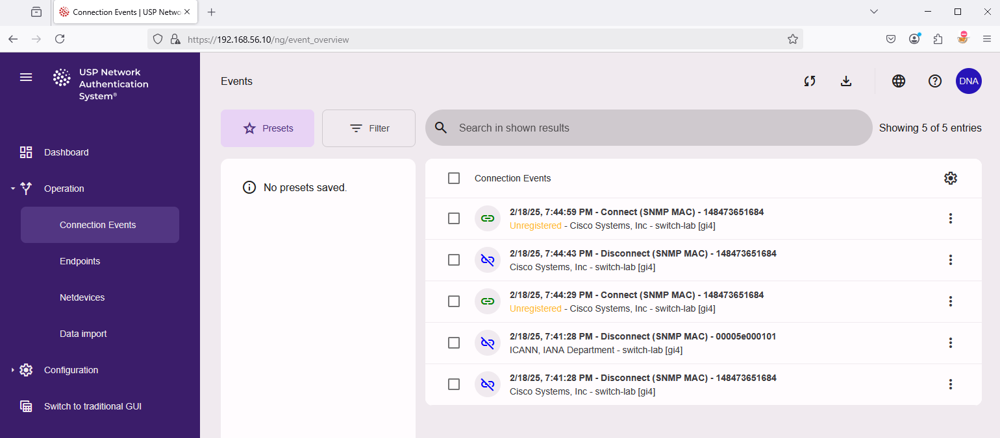
Ein Klick auf den Eintrag eines Verbindungsereignisses öffnet eine Detailansicht des Ereignisses.
Bitte beachten Sie, dass es eine Weile dauern kann, bis ein Switch den Datenverkehr eines neuen Endpunkts registriert und die Informationen in seiner Bridge-Tabelle aktualisiert. Wird ein leerer Status zurückgegeben, versucht USP NAS mehrmals, die Informationen vom Switch abzurufen.
Verbindungsereignisse können auch für ein bestimmtes Netzwerkgerät angezeigt werden. Navigieren Sie zu "Betrieb" → "Netzwerkgeräte" und klicken Sie für dieses Netzwerkgerät auf die Info-Schaltfläche (Details Netzwerkgerät). Klicken Sie oben auf den Tab "Zugeordnete Verbindungsereignisse", um die zugehörigen Ereignisse anzuzeigen.
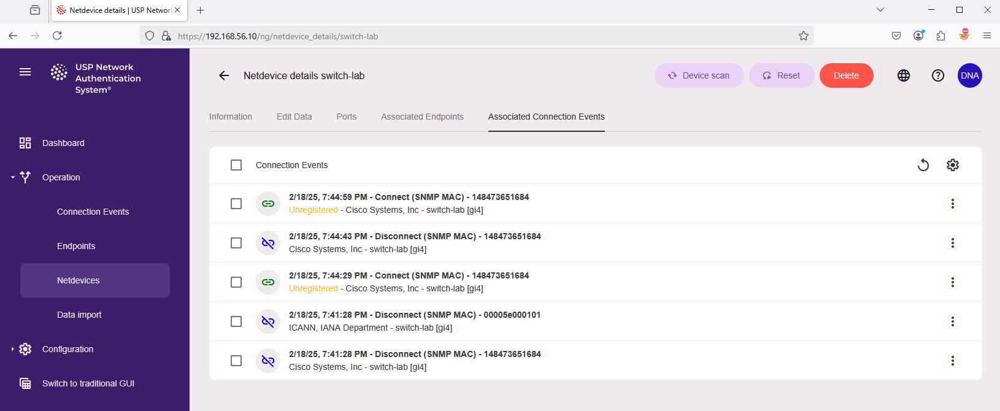
USP NAS verfügt über ein integriertes Inventarsystem zur Erfassung von Endpunkten, die mit dem Netzwerk verbunden sind oder verbunden werden sollen (Client-Geräte wie Laptops, Desktop-PCs, Drucker, IoT-Geräte, …). Ist ein Endpunkt inventarisiert, kann er für die Durchsetzung von Zugriffsrichtlinien verwendet werden, z. B. um den Netzwerkzugang basierend auf dem Endpunkttyp zu erlauben oder zu verweigern.
Standardmässig setzt USP NAS für unbekannte Endpunkte keine Zugriffsrichtlinien durch; dies kann jedoch geändert werden, sobald eine ausreichende Anzahl Endpunkte inventarisiert ist.
Es gibt mehrere Möglichkeiten, einen Endpunkt zum USP NAS Inventar hinzuzufügen.
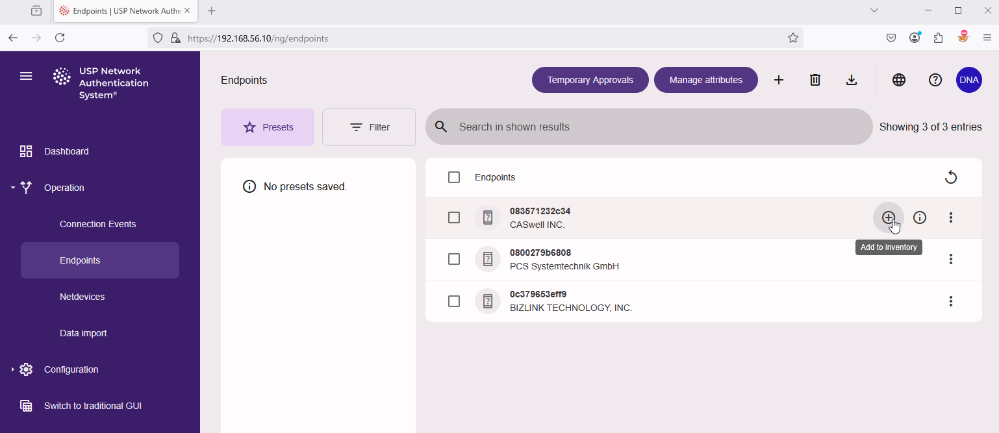
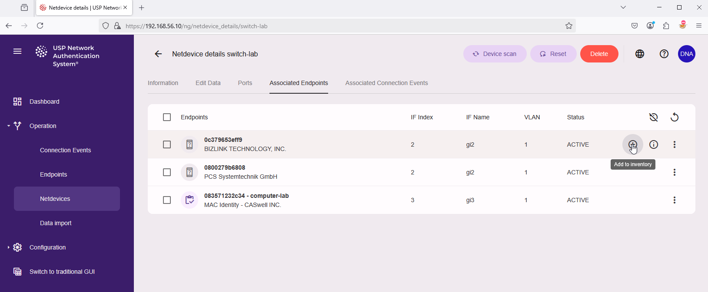
Geben Sie im Pop-up-Dialog "Endpunkt zum Inventar hinzufügen" alle erforderlichen Informationen für den neuen Endpunkt ein und bestätigen Sie mit "Zum Inventar hinzufügen", zum Beispiel:
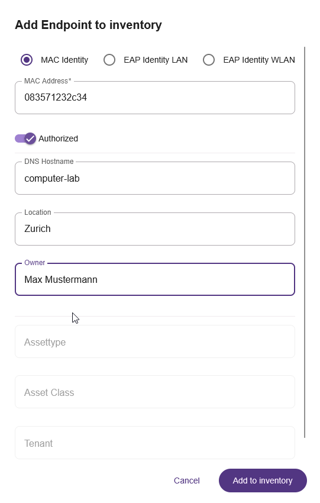
Der Endpunkt ist nun inventarisiert und kann für Zugriffsrichtlinien verwendet werden. Das Erstellen von Zugriffsrichtlinien ist nicht Gegenstand dieser Anleitung; weitere Informationen finden Sie in der allgemeinen USP NAS Dokumentation.
Bitte beachten: Das Systemupdate kann sowohl über die moderne als auch über die traditionelle Web-GUI durchgeführt werden. Wir empfehlen die Verwendung der modernen Web-GUI.
USP NAS Update-Images können mit Ihrem Kundenkonto von der USP Service Platform heruntergeladen werden.
Um das Update zu installieren, navigieren Sie im Hauptmenü auf der linken Seite zu "Wartung":
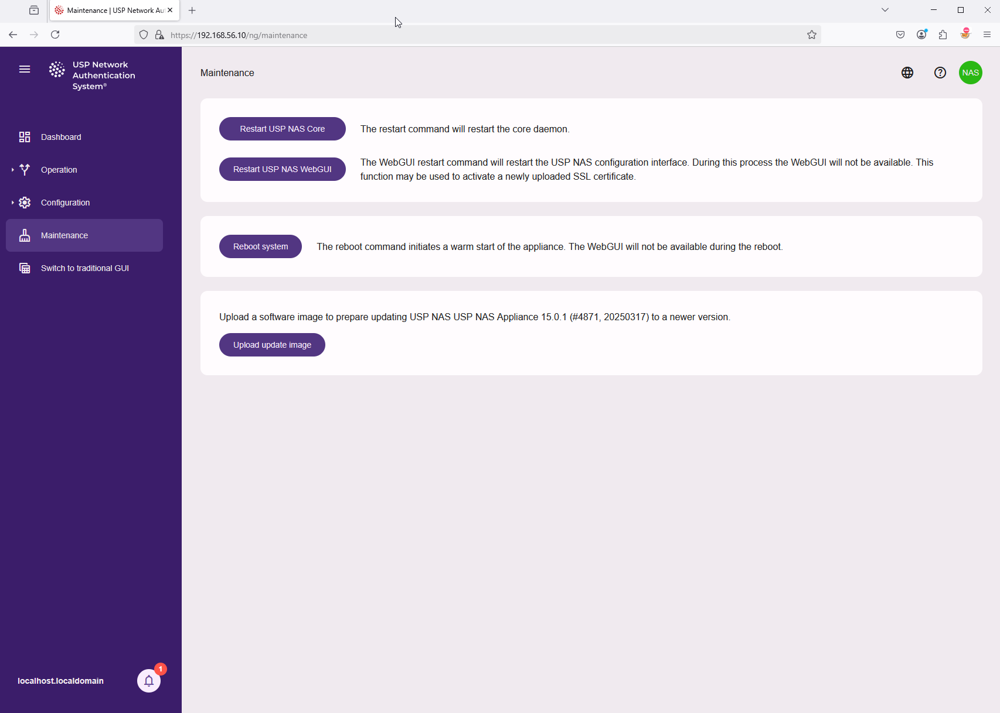
Klicken Sie auf "Update-Image hochladen" und wählen Sie die USP NAS Software-Image-Datei auf Ihrem lokalen Computer aus, zum Beispiel: nas-15.0.1-4871-x86_64-update.img.
Der Upload des Software-Images startet sofort.
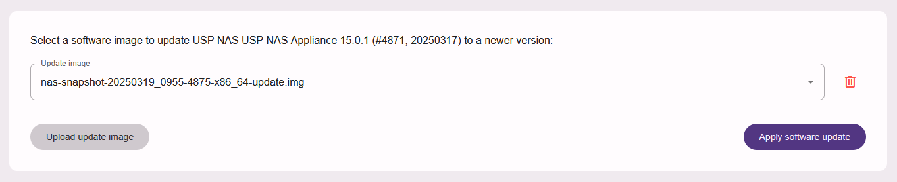
Sobald die Datei hochgeladen ist, können Sie auf die Schaltfläche "Software-Update anwenden" klicken, um die Installation zu starten. Dies kann eine Weile dauern. Während dieser Zeit ist die Benutzeroberfläche nicht nutzbar, und der USP NAC Dienst verarbeitet keine Authentifizierungsanfragen und führt keine Netzwerkgeräte-Scans durch.
Bitte beachten: Die USP NAS Appliance wird während des Update-Vorgangs automatisch neu gestartet.